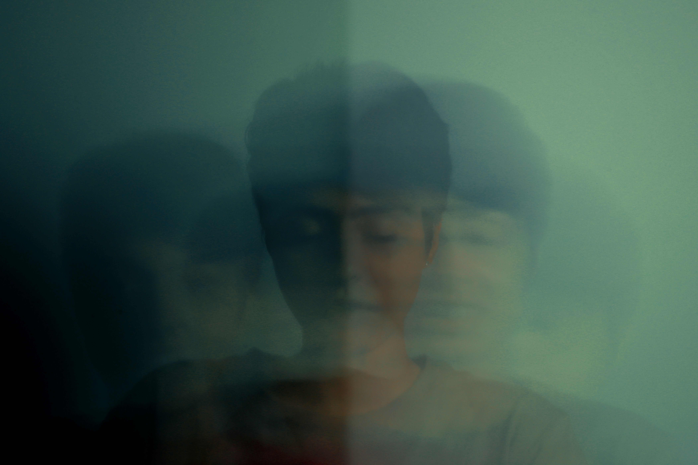

טראומה ומצבי משבר
מערעור הקרקע אל השבת המוגנות, החוסן והביטחון וצמיחה מתוך משבר
כשהקרקע נשמטת: התמודדות עם טראומה ומשברי חיים
החיים מזמנים לנו רגעים שבהם המציאות כפי שהכרנו אותה משתנה בפתאומיות ואנחנו נדרשים להסתגל מחדש. זה יכול להיות אירוע חד ומטלטל, או הצטברות של עומס שהופכת לבלתי נסבלת, אך התחושה היא לרוב דומה: הקרקע שתחת רגלינו נשמטת. משברים יכולים לנבוע ממגוון רחב של אירועים: אובדן של אדם קרוב, שינויים במערכות יחסים, שינויים בקריירה, מעברי חיים, אתגרים בריאותיים ועוד. במצבים של טראומה או משבר, תחושת הביטחון הבסיסית שלנו בעולם ובעצמנו מתערערת. דברים שנראו לנו פעם מובנים מאליהם הופכים למורכבים, והיכולת להכיל את היומיום נדמית כמעמסה כבדה.
מצבי משבר הם לא רק "בעיה שיש לפתור", אלא רגעים שבהם הנפש והגוף מגייסים את כל כוחותיהם כדי לשרוד את הטלטלה. זה יכול להתבטא בחרדה ודריכות בלתי פוסקת, בדיכאון, ניתוק וקהות רגשית, בכעסים שקשה לווסת, או בתחושה מערערת שהעולם הפך למקום זר ומאיים. בטיפול, אנו יוצרים קודם כל אי של יציבות - מרחב מוגן שבו אפשר ביחד לאסוף את השברים. בעזרת כלים ממוקדי טראומה של שיטת האקומי, אנו יכולים לעבוד בעדינות ובקצב שמתאים לך, כדי להשיב למערכת את היכולת לווסת את עצמה, לעבד את מה שקרה ולמצוא מחדש נקודות של אחיזה, שקט וביטחון.

טראומה ופוסט טראומה: כשהעבר ממשיך לחיות בהווה
טראומה היא לא רק האירוע שהתרחש בעבר; היא החותם שהאירוע השאיר אחריו בגוף ובנפש. חשוב להבין שטראומה היא למעשה "תגובה נורמלית למצב לא נורמלי" - המערכת שלנו מגייסת את כל כוחותיה כדי לשרוד את הטלטלה, וזה יכול להתבטא במחשבות חודרניות, סיוטים, ניתוק (דיסוציאציה), או תחושה שכל גירוי קטן - ריח, קול או מילה - עלול להצית מחדש את אותה חוויה קשה. תגובות אלו יכולות להופיע מיד, או ב"פריצה מאוחרת" חודשים אחרי האירוע. לרוב הן ידעכו לבדן עם הזמן, אך עבור חלקנו, גם כשהסכנה חלפה והמציאות החיצונית חזרה למסלולה, המערכת הפנימית נשארת ״תקועה״ באותו רגע מטלטל. זוהי הליבה של הפוסט-טראומה (PTSD) - מצב שבו העבר ממשיך להדהד בהווה ולא נותן מנוח.
לא ניתן להגדיר טראומה רק דרך האירוע שהתרחש, אלא גם דרך האופן שבו הוא נחווה על ידי האדם. עם זאת, במקרים של פגיעות טראומטיות מתמשכות וחוזרות, עשוי להתפתח מצב חמור יותר של פוסט-טראומה מורכבת (C-PTSD). מצב זה מלווה בערעור עמוק של הערך העצמי, קשיי ויסות רגשי, קשיים במערכות יחסים וערעור תחושת המוגנות הבסיסית. החוויה היא של פיצול: חלק אחד מאיתנו מנסה להמשיך בחיים ולהימנע מכל מה שמזכיר את הכאב, בעוד שחלק אחר נותר בדריכות מתמדת המלווה לעיתים בדחף בלתי נשלט לחיות אותו מחדש. בטיפול, איננו יכולים "למחוק" את העבר, אך יש בידינו כלים לעזור לנפש לארגן את הסיפור מחדש כדי להשיב לעצמנו את החופש לחיות בהווה, מתוך תחושת מוגנות וביטחון.
הגוף זוכר: טיפול בטראומה בגישת האקומי
כשמערכת העצבים פוגשת אירוע גדול מכפי שביכולתה להכיל, הטראומה נרשמת בראש ובראשונה בזיכרון הגופני. גם כשהסכנה חולפת, הגוף נושא את עקבותיה, ולפעמים הוא ממשיך להגיב כאילו האירוע נוכח כאן ועכשיו. התגובה הטראומטית מקיפה את כל מישורי החוויה שלנו - במישור הפיזי דופק מואץ, קשיי נשימה, בחילות, רעד, יובש בפה, מתח שרירי והפרעות שינה; במישור הקוגניטיבי מחשבות חודרניות (פלאשבקים) וקשיי ריכוז וזיכרון; במישור הרגשי דריכות מתמדת, דיכאון, התקפי חרדה, התפרצויות זעם, אשמה וחוסר אונים; ובמישור ההתנהגותי הסתגרות, חשדנות, והימנעות מחוויות, מקומות או אנשים שעלולים להציף את הזיכרון.
פסיכותרפיה בשיטת האקומי מציעה כלים ייחודיים לטיפול בטראומה. מתוך נקודת ההנחה שהגוף מחזיק בתוכו את המפתח האורגני לריפוי, במקום רק לדבר "על" העבר (מה שעלול לעיתים לייצר הצפה מחדש), אנו עובדים דרך מיינדפולנס בהקשבה עדינה לחוויה הפנימית ברגע הזה. בסביבה בטוחה ומכילה, המושתת על נוכחות אוהבת ואי-אלימות, אנו מייצרים יחד חוויות רגשיות וגופניות חדשות של ביטחון ומוגנות. כך אנו מאפשרים למערכת העצבים להשתחרר מהעוררות המוגברת ולחזור לאיזון.
התהליך הטיפולי אינו עוסק רק בהפחתת התסמינים, אלא בבנייה מחדש של קשר בטוח עם העצמי ועם העולם. העבודה האינטגרטיבית מאפשרת ריפוי והתמרה, תוך שימוש בטכניקות עדינות המאפשרות עיבוד רגשות ודחפים שנלכדו בגוף. העיבוד של הטראומה נעשה מתוך גילוי של כוחות פנימיים וחיזוקם, היכרות עם חלקי נפש חומלים ונבונים, מציאת משמעות חדשה לחוויות העבר, ותנועה מהישרדות לעבר צמיחה, יצירתיות וחיות.

אובדן ושכול: לתת מקום למה שאיננו
אובדן של אדם קרוב הוא אחד ממשברי החיים המטלטלים ביותר. זהו רגע שבו הזמן כאילו עוצר מלכת, והעולם שבחוץ ממשיך לנוע בשעה שבפנים נפער חלל עמוק. אבל אינו "בעיה" שיש לרפא או שלב שצריך פשוט "לעבור" כדי לחזור לעצמנו; הוא תהליך טבעי של הנפש המנסה להסתגל למציאות חדשה ובלתי נתפסת. לעיתים הוא מרגיש כמו גלים שמאיימים להטביע, ולעיתים הוא מתבטא בתחושת ריקנות, אשמה, או קושי למצוא טעם בחיים שהשתנו ללא היכר.
בטיפול, אנו יוצרים מרחב שמאפשר לשהות עם הכאב מבלי להיבהל ממנו. במקום לנסות "להתגבר" בכוח או להמשיך הלאה לפני שהנפש מוכנה, אנו נותנים מקום לכל קשת הרגשות שעולים - מהגעגוע העז ועד לכעס, העצב או הבלבול. יחד נמצא את הדרך לעבד את השכול לא כפצע פתוח, אלא כחלק מסיפור החיים. המטרה היא לא לשכוח, אלא למצוא דרך חדשה לשאת את הזיכרון, לבנות מחדש את העוגנים הפנימיים, ולאפשר לחיים לנבוע מחדש - בקצב שלך ובמלוא הכבוד למה שהיה ואיננו.
מחלה ומשברי בריאות: למצוא עוגן כשהביטחון הגופני מתערער
התמודדות עם מחלה כרונית, פציעה, נכות או גילוי רפואי פתאומי, היא הרבה מעבר לאתגר פיזי. עבור רבים, זוהי חוויה של אובדן הביטחון הבסיסי בגוף, שהופך ממקום מוכר ובטוח למקור של כאב, פחד או חוסר ודאות. שבר בריאותי מערער את הסדר המוכר של החיים, ועמו עלולה להתערער גם התפיסה שלנו לגבי מי אנחנו ומה אנחנו מסוגלים לעשות. זהו משבר שיכול לעורר חרדה קיומית, תחושת בדידות עמוקה, ולעיתים אף כעס על הגוף או על המציאות.
בטיפול, אנו יוצרים מקום בטוח ומוגן לעבד את המורכבות הזו לתת מילים למה שקשה לבטא. בעזרת פסיכותרפיה דינמית, אנו מבינים את ההשפעות העמוקות של המצב הבריאותי על עולמך הפנימי: כיצד הוא משפיע על הדימוי העצמי, על מערכות היחסים ועל תחושת הערך והמסוגלות. במקום לראות בגוף מערכת שיש לתקן, אנו פועלים כדי להשיב את תחושת המוגנות הפנימית, גם בתוך המגבלות הגופניות, ולמצוא עוגנים של שקט וחוסן בתוך הטלטלה. התהליך הטיפולי מאפשר לעבד את האבל על האופן שבו הדברים היו פעם, ולמצוא את הדרך לחיות חיים מלאים ובעלי משמעות גם לצד האתגר הבריאותי.
משבר אמצע החיים: כשהמוכר הופך לזר
לפעמים, כשהכל לכאורה כבר יציב ובנוי, מהדהדת פתאום השאלה: "האם אלו באמת החיים שאני רוצה לחיות?". משבר אמצע החיים הוא צומת דרכים שבו המבנים המוכרים שבנינו - בקריירה, במשפחה ובזהות האישית - כבר לא מספקים אותנו כפי שהיו בעבר. הטריגר יכול להיות אירוע חיצוני כמו פרישה, עזיבת הילדים את הבית או שינוי בסטטוס הזוגי; אך לעיתים זו תחושה של איבוד כיוון שמזדחלת פנימה ללא כל שינוי חיצוני. זהו רגע שבו הפער בין מי שאנחנו לבין מי שאנחנו חולמים להיות, מעלה שאלות של משמעות וערך עצמי: "מי אני עכשיו?", "מה נשאר מהחלומות שלי?", ו"איך אני רוצה שתראה המשך הדרך?".
הטיפול הרגשי מאפשר לנו להתייחס למשבר הזה כזמן שיא לחשבון נפש והערכה מחדש של מסלול החיים. מתוך הבנה שמה שמכונה ״משבר״ הוא למעשה תגובה טבעית לתהליך התבגרות הנפש והגוף, אנו הופכים אותו להזדמנות יקרה מפז לבנייה עצמית מחודשת, קשובה ומחוברת יותר. בטיפול אנו בוחנים את הדפוסים הישנים ששירתו אותך בעבר ומפנים מקום לגלות חלקים חדשים, יצירתיים וחיים יותר בעצמך. המטרה היא להפוך את תחושת הערעור לקרקע פורייה של צמיחה, ולמצוא משמעות חדשה וחיבור עמוק יותר לרצונות האותנטיים שלך בשלב החיים הנוכחי.
צמיחה מתוך השבר
התמודדות עם טראומה ומשברי חיים אינה רק ניסיון "להתגבר" על אירועי העבר, אלא תנועה עדינה של השבת האמון - בעצמנו, בגוף שלנו, באחרים ובעולם. כל אחד מהמרחבים שתוארו כאן - הזיכרון הגופני הקפוא של הטראומה, הכאב שבדילמת אמצע החיים, האובדן או משבר הבריאות - מציף בדרכו את אותו ערעור בסיסי: "איך אפשר להרגיש שוב מוגן ובטוח בתוך מציאות שהשתנתה ללא היכר?"
כל משבר בחיינו, כואב ככל שיהיה, נושא בחובו גם הזדמנות. אלו הם הרגעים שבהם הקליפה הישנה נסדקת, כדי לאפשר למשהו חדש, חיוני ואותנטי יותר לנבוע מתוכך. בנקודה זו, הטיפול מאפשר תהליך הדרגתי של עיבוד - כזה שאינו נבהל מהשברים, אלא לומד לשהות איתם בביטחון. דרך שילוב בין שיטת האקומי לבין פסיכותרפיה דינמית, ניתן לעבד את אירועי העבר, האובדנים שחווינו, והשינויים שנכפו עלינו, ולהפוך אותם מחלקים כואבים ומבודדים לפסיפס חזק, עמיד ושלם יותר המרכיב את סיפור חייך.
כך מתאפשר מעבר הדרגתי ממצב של הישרדות ודריכות להעמקת הקשר עם המשאבים הפנימיים שלנו: זיהוי הכוחות שנשמרו בנו גם בתוך הסערה, בנייה מחדש של תחושת המוגנות, ופיתוח יכולת לשאת את זיכרונות העבר מבלי שהם ינהלו את ההווה. תהליך זה אינו מבוסס על חזרה למי שהיינו לפני השבר, אלא על זהות אינטגרטיבית ושלמה יותר - חזרה אל מי שאנחנו עכשיו, מתוך הכרה בתעצומות שלנו, לכדי חיבור מחודש לזרימת החיים.
״בלב ליבו של הקושי, שוכנת ההזדמנות״
— אלברט איינשטיין

לחזור אל קרקע בטוחה
טיפול בטראומה ומצבי משבר מאפשר להפוך את המפגש בקליניקה למרחב של חקירה עדינה של הדרכים שבהן אירועי העבר או טלטלות ההווה מעצבים את מציאות חייך. עבודתי כפסיכותרפיסט מבוססת על הכשרה בתכנית הארבע-שנתית לפסיכותרפיה במכון האקומי, ועל ניסיון קליני במרכז הרפואי 'לב השרון' ובקליניקה פרטית בפרדס חנה.
יחד ניצור מרחב בטוח ומוגן שבו נוכל להקשיב לזיכרון הגופני, לזהות את מנגנוני ההגנה ששירתו אותך בעבר, ולמצוא את הדרך להשיב את תחושת האמון, הביטחון והשליטה לחייך. השילוב בין התנסות חווייתית לבין הבנה פסיכולוגית מעמיקה מאפשר לעבד את האירועים המכאיבים, לחוות חוויות גופניות ורגשיות חדשות של ביטחון ומוגנות, וליצור אינטגרציה שלמה יותר של העצמי.
אם את.ה מרגיש.ה שהגיע הזמן להשתחרר מדריכות מתמדת, למצוא עוגן של יציבות או להפוך את המשבר להזדמנות של צמיחה - אשמח ללוות אותך בתהליך.